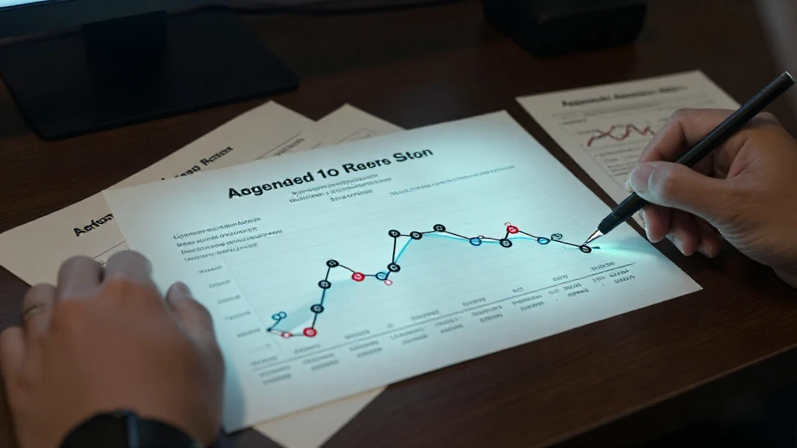
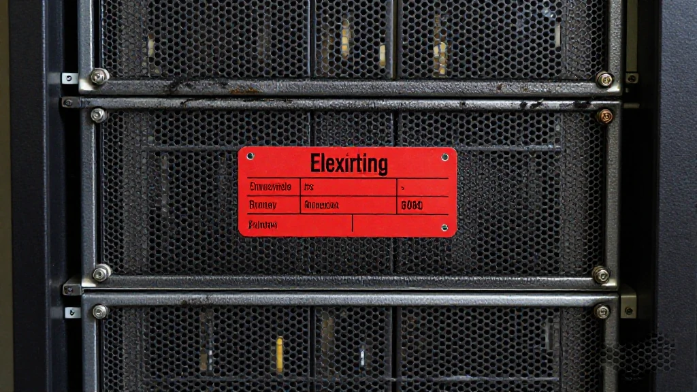
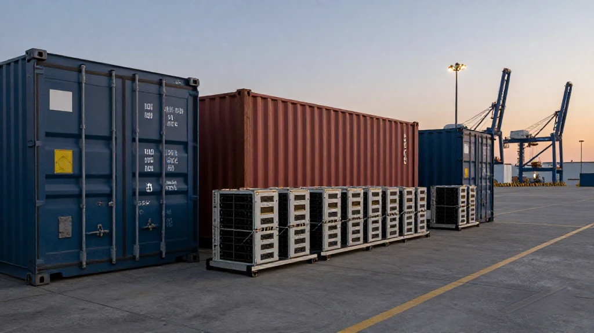
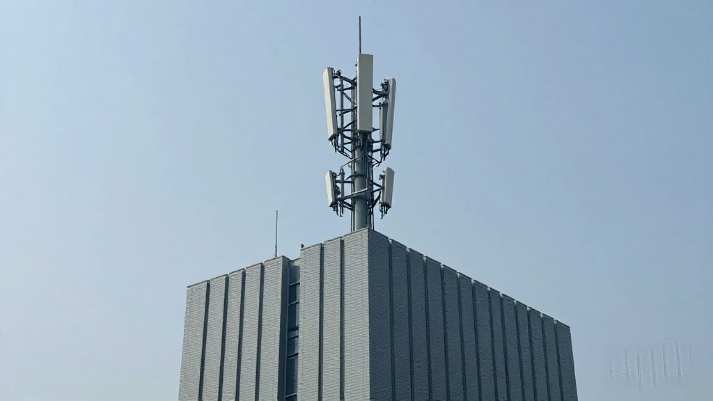

圖片由 AI輔助創作（Z-Image-Turbo）Image by AI (Z-Image-Turbo)
【鄭哥點評】欄目：鄭哥博客點評｜日期：2026-11-09
今日四條新聞，睇落互不相干：一間投行講雲商發債，一間軟件巨頭唔續租舊卡，六十萬塊 H200 滯留香港，中國移動同智譜簽約。四件事擺埋一齊，講嘅其實係同一句——**AI 呢場戲，瓶頸唔再係「模型夠唔夠聰明」，而係「錢同電同卡，邊樣先斷」。** 我睇咗成朝，越睇越覺得，今年大家爭論「邊個模型贏」，爭論錯咗方向。真正決定輸贏嘅，係誰能把成本壓住。

圖片由 AI輔助創作（Z-Image-Turbo）Image by AI (Z-Image-Turbo)
一、算力擴張，開始使垃圾債嘅錢
11月8日高盛出咗個數字：五家超大規模雲商一個星期發債 670 億美元，年內累計 2,960 億，已經超過全年預測上限。更值得留意嘅係，AI 相關新債嘅溢價去到 18 個基點，接近垃圾債水平。
呢個數字嘅意思唔係「AI 好賺」，係「AI 已經要用貴錢養」。當一個行業要靠發債維持擴張，佢嘅成本就唔再由技術曲線決定，而由利率曲線決定。傳導路徑好清楚：債息貴 → 擴容放慢 → 算力配額收緊 → 租用價格企硬 → API 折扣縮水。
做內容嘅人要留意最後一步。你今日覺得模型平，係因為有人在前面貼錢。貼錢嘅人開始借錢，折扣就會慢慢收。
來源：財聯社《AI 新債溢價接近垃圾債》，2026-11-08｜https://wap.eastmoney.com/a/202611083925687346.html

圖片由 AI輔助創作（Z-Image-Turbo）Image by AI (Z-Image-Turbo)
二、長約鎖嘅係容量，唔係型號
11月6日彭博報導，微軟拒絕續簽 2023 年為 Bing 推理租用甲骨文算力嘅多年協議，理由係對方交出嚟嘅係上代英偉達芯片，甲骨文當日跌約 4%。
呢件事最值得記住嘅，唔係「微軟同甲骨文反面」，而係一句行業常識被打破：**三年期長約，鎖住嘅係容量，唔係架構。** 簽嗰陣你以為買到未來，到期嗰陣你可能接到一堆停產型號。
對細公司嘅啟示更直接：如果你嘅生意依賴租算力，你要問嘅唔止「幾錢」，仲要問「三年後呢批卡仲跑唔跑得動我嘅模型」。買同租之間嘅選擇，本質係你賭唔賭技術代差。
來源：IT之家《微軟拒絕續租甲骨文舊款英偉達算力》，2026-11-06｜https://www.ithome.com/1/023/606.htm

圖片由 AI輔助創作（Z-Image-Turbo）Image by AI (Z-Image-Turbo)
三、六十萬塊卡滯留香港，灰市價變成定價錨
路透 11月5日講，大約六十萬塊 H200 滯留香港等批，幾家大廠各得約一萬塊。10月底內地八卡 H200 伺服器報價超過 600 萬人民幣，約為一年前三倍；Blackwell 整機超過 2,000 萬。
三倍唔係一個小數目。當灰市價格企到咁高，佢就會變成一個隱形定價錨：任何國產方案只要報價低過佢，都顯得「抵」；任何合規渠道只要拿唔到貨，都要向佢對標。結果係，短期內租算力嘅成本壓唔落去。
我自己嘅判斷係：呢個價格唔反映技術價值，反映嘅係**通道稀缺**。通道一鬆，價格跌得會比想像快；通道一緊，跌唔落。
來源：騰訊新聞《約 60 萬塊 H200 滯留香港待批》，2026-11-06｜https://news.qq.com/rain/a/20261106A064OX00

圖片由 AI輔助創作（Z-Image-Turbo）Image by AI (Z-Image-Turbo)
四、國產模型轉咗條路：借央企渠道
11月6日中國移動雲同智譜簽約，GLM 接入移動雲 MoMA 平台，共建 Token 聯合發展中心，做國產算力適配、AI Coding 同金融政務方案。
呢條路同一年前好唔同。之前國產模型係自建 API、自己搞開發者生態；現在係借央企同運營商嘅渠道分銷。渠道嘅好處係穩定同合規，代價係議價權唔喺自己手上。
我睇呢個轉向，係被逼出嚟嘅聰明：既然算力同通道都唔喺自己手，不如把分發交出去，自己專心做模型。
來源：IT之家《中國移動雲與智譜簽約，GLM 接入 MoMA 平台》，2026-11-06｜https://www.ithome.com/1/023/937.htm
圖片由 AI輔助創作（Z-Image-Turbo）Image by AI (Z-Image-Turbo)
結尾：呢四件事對普通人有咩關係
四個外部擠壓之外，模型自己都有個問題：能力漲得比收入快，同質化又嚴重。同一代模型之間，跑分差距越嚟越細，客戶揀邊個，多數唔係睇榜首，而係睇「夾唔夾我手上嘅流程」。
我自己嘅判斷：接下來一年，模型公司真正嘅戰場唔係「再叻幾個百分點」，而係「有冇人肯為你嘅穩定同合規付溢價」。跑分可以買，信任買唔到。呢個亦解釋咗為何算力一貴，模型公司最先受壓——佢哋手上嘅籌碼，多數係「再訓練一次會更好」，而再訓練一次，正是最貴嗰種動作。
所以「模型情況」講到底唔係一條技術曲線，係一條現金流曲線。誰能撐到對手下牌，誰就贏。
如果你唔做 AI，呢四條似乎同你無關。但佢哋合埋一齊，決定咗三樣你日日會撞到嘅嘢：
第一，**工具會加價或者加限制**。免費額度收縮，係成本傳導最常見嘅表現。
第二，**「自己搭」嘅門檻會升**。卡貴、電貴、債貴，細團隊要靠租，租就要接受配額。
第三，**國產替代會加速**。唔係因為愛國，而係因為買唔到同買唔起——被逼出嚟嘅選擇，通常最持久。
所以我唔會用「泡沫」兩個字總結今日。泡沫講嘅係價格同價值脫節；今日發生嘅，係**價值本身變貴**。算力、電力、通道，三樣都係實體嘢，唔會因為模型跑分高就變便宜。
模型會愈來愈聰明，但「用得起」呢件事，今年第一次變得不確定。
---
圖片由 AI輔助創作（Z-Image-Turbo）Image by AI (Z-Image-Turbo)
\[Zheng Ge's Take\] Column: Zheng Ge's blog commentary | Date: 2026-11-09
Four stories today look unrelated: an investment bank talking about cloud debt, a software giant refusing to renew old chips, six hundred thousand H200s stuck in Hong Kong, and China Mobile Cloud signing with Zhipu. Put together, they say one thing — **in AI, the bottleneck is no longer how smart the model is, but which runs out first: money, power, or chips.** I spent the morning reading all four, and the more I read, the more I think this year's debate — "which model wins" — has been aimed at the wrong target. What actually decides who survives is who can hold cost down.
圖片由 AI輔助創作（Z-Image-Turbo）Image by AI (Z-Image-Turbo)
1. Compute expansion is now funded by near-junk debt
On 8 November Goldman Sachs reported that five hyperscalers issued USD 67 billion of debt in a single week, USD 296 billion year to date — already past the full-year forecast ceiling. More telling: the spread on new AI-related debt has reached 18 basis points, close to junk levels.
That number does not mean AI is highly profitable. It means AI now has to be financed with expensive money. Once an industry borrows to keep expanding, its cost is set by the rate curve, not the technology curve. The transmission path is clear: higher yields → slower build-out → tighter compute quotas → firmer rental prices → thinner API discounts.
Anyone producing content should watch that last step. Models feel cheap today because someone upstream is subsidising them. When that someone starts borrowing, the discounts start shrinking.
Source: 財聯社《AI 新債溢價接近垃圾債》，2026-11-08 | https://wap.eastmoney.com/a/202611083925687346.html
圖片由 AI輔助創作（Z-Image-Turbo）Image by AI (Z-Image-Turbo)
2. A long contract locks capacity, not architecture
On 6 November Bloomberg reported that Microsoft declined to renew a multi-year agreement signed in 2023 to rent Oracle capacity for Bing inference, because what Oracle delivered was previous-generation Nvidia silicon. Oracle fell about 4% that day.
The lesson isn't that the two fell out. It's that a piece of industry common sense just broke: **a three-year contract locks capacity, not architecture.** When you sign, you think you're buying the future; when it matures, you may be handed a stack of discontinued parts.
For smaller companies the implication is blunt: if your business rents compute, the question isn't only "how much" but "will this batch still run my model in three years". Choosing between buying and renting is really a bet on how fast the silicon generations turn over.
Source: IT之家《微軟拒絕續租甲骨文舊款英偉達算力》，2026-11-06 | https://www.ithome.com/1/023/606.htm
圖片由 AI輔助創作（Z-Image-Turbo）Image by AI (Z-Image-Turbo)
3. Six hundred thousand chips stuck in Hong Kong make the grey market the price anchor
Reuters reported on 5 November that roughly 600,000 H200 units are sitting in Hong Kong awaiting approval, with several large buyers receiving about 10,000 each. By late October an eight-card H200 server in the mainland was quoted above RMB 6 million — roughly three times the price a year earlier — and a full Blackwell machine above RMB 20 million.
Three times is not a rounding error. Once the grey-market price sits that high it becomes an invisible anchor: any domestic alternative looks like a bargain as long as it prices below it, and any compliant channel that cannot get stock has to quote against it. The result is that rental costs will not fall in the near term.
My read: that price does not reflect technical value, it reflects how scarce the channel is. Loosen the channel and it falls faster than you expect; tighten it and it will not fall at all.
Source: 騰訊新聞《約 60 萬塊 H200 滯留香港待批》，2026-11-06 | https://news.qq.com/rain/a/20261106A064OX00
圖片由 AI輔助創作（Z-Image-Turbo）Image by AI (Z-Image-Turbo)
4. Domestic models changed route: borrow the state carriers' channels
On 6 November China Mobile Cloud signed with Zhipu: GLM joins its MoMA platform, with a joint Token development centre covering domestic compute adaptation, AI coding, and finance and government solutions.
That is a different route from a year ago. Domestic models used to build their own APIs and grow their own developer ecosystems; now they distribute through carriers and state-owned channels. The upside is stability and compliance. The cost is that pricing power is no longer in their own hands.
I read this as a smart retreat under pressure: when neither compute nor channels are yours, hand out distribution and keep your attention on the model itself.
Source: IT之家《中國移動雲與智譜簽約，GLM 接入 MoMA 平台》，2026-11-06 | https://www.ithome.com/1/023/937.htm
圖片由 AI輔助創作（Z-Image-Turbo）Image by AI (Z-Image-Turbo)
Conclusion: what these four mean for everyone else
Beyond the four external squeezes, the models have a problem of their own: capability is rising faster than revenue, and the field is crowded. Within one generation the benchmark gaps are narrowing, and buyers increasingly choose on "does it fit the workflow I already run" rather than on who tops the leaderboard.
My read: over the next year the real battleground for model companies is not another few points of accuracy, but whether anyone will pay a premium for stability and compliance. Benchmarks can be bought; trust cannot. This is also why a rise in compute prices hits model companies first — their main lever is "train it once more and it will be better", and training once more is the most expensive move available.
So "the state of the models" is not really a technology curve. It is a cash-flow curve. Whoever can keep paying until the other side folds wins.
If you don't work in AI, none of this seems to concern you. But together they decide three things you meet every day.
First, **tools get pricier or more restricted.** Shrinking free tiers are the most common form of cost pass-through. Second, **the bar for building your own rises.** Expensive chips, expensive power, expensive debt — small teams rent, and renting means accepting quotas. Third, **domestic substitution accelerates** — not out of patriotism, but because imports become unaffordable or unavailable. Choices forced on you tend to last.
So I won't sum up today with the word "bubble". A bubble is price detaching from value. What happened today is that **value itself got more expensive.** Compute, power, channels — all physical, none of them getting cheaper because a model scores higher on a benchmark.
Models will keep getting smarter. Whether you can afford to use them became uncertain for the first time this year.
---